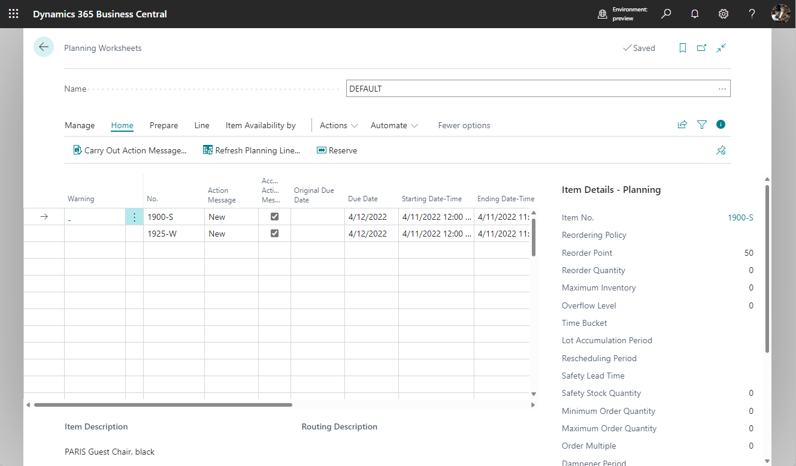

Designdetails: Zentrale Konzepte des Planungssystems
Die Planungsfunktionen sind in einem Stapelprojekt enthalten, die zuerst die entsprechenden Artikel und die Periode für die Planung auswählt. Dann ruft der Batch-Job gemäß dem Low-Level-Code jedes Artikels (Stücklistenposition) eine Codeeinheit auf, die einen Lieferplan berechnet. Die Codeeinheit gleicht Angebot-Nachfrage-Sätze aus und schlägt dem Benutzer Maßnahmen vor, die er ergreifen soll. Die vorgeschlagenen Aktionen erscheinen als Zeilen im Planungsarbeitsblatt oder Bestellarbeitsblatt.

Der Planer eines Unternehmens, wie etwa ein Einkäufer oder ein Produktionsplaner, ist wahrscheinlich der Benutzer des Planungssystems. Das Planungssystem hilft dem Benutzer durch die Ausführung der umfangreichen aber insgesamt recht einfachen Berechnungen eines Plans. Der Benutzer kann sich dann auf die Lösung der komplizierteren Probleme konzentrieren, wenn keine Standardfälle vorliegen.
Das Planungssystem wird durch den erwarteten und den tatsächlichen Debitorenbedarf gesteuert, etwa durch Planung und Verkaufsaufträge. Planungsberechnungen schlagen Maßnahmen vor, die Sie in Bezug auf Lieferungen von Lieferanten, Montage oder Produktion oder Umlagerungen aus anderen Lagern ergreifen können. Ein Beispiel für diese vorgeschlagenen Aktionen sind neue Beschaffungsaufträge, wie Einkaufsbestellung oder Fertigungsaufträge zu erstellen. Wenn es bereits Beschaffungsaufträge gibt, könnten die vorgeschlagenen Aktionen so aussehen, dass die Aufträge vergrößert oder schneller erteilt werden sollen, damit den Bedarfsänderungen Rechnung getragen wird.
Außerdem hat das Planungssystem die Aufgabe sicherzustellen, dass der Lagerbestand nicht unnötig wächst. Im Fall eines abnehmenden Bedarfs wird das Planungssystem vorschlagen, dass vorhandene Ersatzaufträge zurückgestellt, mengenmäßig verringert oder storniert werden sollten.
Eine Codeeinheit beinhaltet die Planungslogik und folgende Funktionen:
- MRP and MPS
- Änderungsplanung berechnen
- Neuplanung berechnen
Die Beschaffungsplanberechnung schließt jedoch verschiedene untergeordnete Systeme mit ein.
Das Planungssystem umfasst keine dedizierte Logik für das Kapazitätsplanieren oder die Feinterminierung umfasst. Diese Arten von Planungsarbeiten werden separat durchgeführt. Der Mangel an direkter Integration zwischen den beiden Bereichen bedeutet auch, dass substanzielle Kapazitäts- oder Zeitplanänderungen erfordern, dass Sie die Planung erneut durchführen.
Planungsparameter
Die Planungsparameter, die Sie für einen Artikel oder eine Gruppe Elemente einrichtet, steuern die Aktionen, die das Planungssystem in verschiedenen Situationen vorschlägt. Definieren Sie die Planungsparameter für jeden Artikel, um zu steuern, wann, wie viel und wie aufgefüllt werden soll.
Sie können Planungsparameter auch für jede mögliche Kombination aus Artikel, Variante und Lagerort auch definieren, indem Sie Lagerhaltungsdaten für alle Kombinationen einrichten, und dann einzelne Parameter angeben. Weitere Informationen finden Sie unter Designdetails: Wiederbeschaffungsverfahren behandeln und Designdetails: Planungsparameter.
Startdatum der Planung
Das Planungssystem hilft Ihnen, offene Aufträge in der Vergangenheit und vorgeschlagene Aktionen zu vermeiden, die nicht möglich sind. Die Planung behandelt alle Daten vor dem Startdatum als eingefrorenen Zeitraum. Für den eingefrorenen Zeitraum gilt die folgende Regel:
- Alle Vorräte und der Bedarf vor dem Startdatum des Planungszeitraums werden als Teil des Bestands oder als ausgeliefert betrachtet. Mit anderen Worten: Es nimmt an, dass der Plan für die Vergangenheit gemäß dem vorhandenen Plan ausgeführt wurde. Weitere Informationen finden Sie unter Aufträge vor dem Planungsstartdatum bearbeiten.
Dynamische Auftragsverfolgung (Bedarfsverursacher)
Die dynamische Auftragsnachverfolgung und die simultane Erstellung von Ereignismeldungen im Planungsarbeitsblatt sind kein Teil des Beschaffungsplanungssystems. Wenn ein Bedarf oder eine Bedarfssicherung erstellt oder geändert wird, verknüpft die dynamische Auftragsnachverfolgung den Bedarf und die Mengen, um ihn in Echtzeit zu decken.
Wenn Sie beispielsweise einen Verkaufsauftrag eingeben oder ändern, sucht die dynamische Auftragsnachverfolgung sofort nach einem geeigneten Vorrat, um den Bedarf zu decken. Der Vorrat kann aus dem Lagerbestand oder aus einem erwarteten Beschaffungsauftrag sein (wie einer Einkaufsbestellung oder einem Fertigungsauftrag). Wenn eine Bezugsquelle gefunden wird, verknüpft Business Central den Bedarf mit dem Vorrat. Sie erreichen den Link auf schreibgeschützten Seiten von den Belegzeilen aus. Wenn kein Vorrat gefunden wird, erstellt das dynamische Bedarfsverursachersystem Ereignismeldungen im Planungsarbeitsblatt mit Beschaffungsplanvorschlägen.
Mithilfe der dynamischen Auftragsverfolgung können Sie beurteilen, ob Sie Beschaffungsauftragsvorschläge annehmen sollten. Auf der Angebotsseite zeigt es die Nachfrage, die das Angebot geschaffen hat. Auf der Nachfrageseite zeigt es das Angebot, das die Nachfrage decken sollte.
:::image type="content" source="media/nav_app_supply_planning_1_dynamic_order_tracking.png" alt-text="Beispiel für die dynamische Auftragsverfolgung.":::
Weitere Informationen finden Sie unter Designdetails: Reservierung, Auftragsnachverfolgung und Aktionsmeldungen.
In Unternehmen mit geringem Warenfluss und weniger fortschrittlichen Produktstrukturen reicht es möglicherweise aus, die dynamische Auftragsnachverfolgung für die Vorratsplanung zu verwenden. In ausgelasteteren Umgebungen sollte jedoch das Planungssystem verwendet werden, um einen korrekt saldierten Beschaffungsplan sicherzustellen.
Dynamische Auftragsverfolgung gegenüber dem Planungssystem
Es kann es schwierig sein, zwischen dem Planungssystem und der dynamischen Auftragsnachverfolgung zu unterscheiden. Beide Funktionen zeigen die Ausgabe im Planungsarbeitsblatt an, wobei sie Aktionen vorschlagen, die der Planer ausführen soll. Diese Ausgabe wird jedoch auf andere Weise erstellt.
Das Planungssystem befasst sich mit dem gesamten Angebots- und Nachfragemuster eines Artikels. Es berücksichtigt alle Ebenen der Stücklistenhierarchie entlang der Zeitachse. Die dynamische Auftragsverfolgung befasst sich nur mit der Situation der Bestellung, die sie aktiviert hat. Beim Ausgleich von Bedarf und Angebot erstellt das Planungssystem Verknüpfungen in einem benutzeraktivierten Stapelmodus. Die dynamische Auftragsverfolgung erstellt die Verknüpfungen automatisch, wenn Sie einen Bedarf oder ein Angebot eingeben. Zum Beispiel, wenn Sie einen Verkaufs- oder Einkaufsauftrag erstellen.
Die dynamische Auftragsnachverfolgung verknüpft Bedarf und Vorrat, wenn Daten eingegeben werden, und zwar jeweils nach der ersten Eingabe. Diese Basis kann zu Störung in den Prioritäten führen. Beispielsweise kann ein zuerst eingegebener Verkaufsauftrag mit einem Fälligkeitsdatum im nächsten Monat mit dem Vorrat im Bestand verknüpft werden. Der nächste Verkaufsauftrag, der morgen fällig ist, kann eine Aktionsnachricht veranlassen, damit ein neuen Kaufauftrag erstellt wird, um ihn abzudecken. Das folgende Bild zeigt dieses Szenario.
:::image type="content" source="media/nav_app_supply_planning_1_dynamic_order_tracking_graph.png" alt-text="Beispiel für die Auftragsverfolgung in der Lieferplanung.":::
Das Planungssystem befasst sich mit Bedarf und Angebot für Artikel in einer priorisierten Reihenfolge. Die Bestellung wird nach Fälligkeiten und Bestellarten priorisiert. Das geschieht auf Basis der Notwendigkeit. Löscht alle Auftragsnachverfolgungslinks, die dynamisch erstellt wurden und stellt diese gemäß der Fälligkeitsdatumspriorität wieder her. Wenn das Planungssystem ausgeführt wurde, hat es alle gestörten Gleichgewichte zwischen Bedarf und Vorrat gelöst, wie unten für dieselben Daten angezeigt.
:::image type="content" source="media/nav_app_supply_planning_1_planning_graph.png" alt-text="Beispiel für die Auftragsverfolgung in der Lieferplanung 2.":::
Nachdem Sie die Planung ausgeführt haben, enthält die Ereignismeldungstabelle keine Aktionsnachrichten. Diese Meldungen werden durch die im Planungsarbeitsblatt vorgeschlagenen Aktionen ersetzt. Weitere Informationen finden Sie unter Bedarfsverursacherverknüpfungen bei der Planung.
Sequenz und Priorität in der Planung
Die Reihenfolge der Berechnungen in Ihrem Plan ist wichtig, um das Projekt in angemessener Zeit zu erledigen. Die Priorisierung von Anforderungen und Ressourcen spielt auch eine wichtige Rolle bei der Erlangung bester Ergebnisse.
Das Planungssystem ist bedarfsgesteuert. Artikel auf hoher Ebene sollten vor Artikeln auf niedriger Ebene geplant werden, da sie weiteren Bedarf für Artikel auf niedriger Ebene generieren könnten. Beispiel: Planen Sie die Einzelhandelsstandorte vor Vertriebsstellen, da der Einzelhandelsstandort zusätzlichen Bedarf aus der Vertriebsstelle umfassen könnte. Auf einer detaillierten Abschlussebene sollte das System keinen neuen Verkaufsauftrag erstellen, wenn ein bereits freigegebener Vorrat den Verkaufsauftrag abdecken kann. Ein Lagerartikel mit einer bestimmten Chargennummer sollte nicht zugewiesen werden, um einen generischen Bedarf zu decken, wenn ein anderer Bedarf diese bestimmte Charge benötigt.
Element-Priorität / Low-Level Code
In einer Produktionsumgebung wird der Bedarf für einen fertigen, verkäuflichen Artikel zu einem abgeleiteten Bedarf für Komponenten, die den produzierten fertigen Artikel enthalten, führen. Die Stücklistenstruktur steuert die Komponentenstruktur und kann mehrere Ebenen von halbfertigen Artikel enthalten. Die Absatzplanung eines Artikels in einer Ebene verursacht abgeleiteten Bedarf für Komponenten auf der nächsten Stufe. Diese Hierarchie führt schließlich zu abgeleitetem Bedarf für Einkaufsartikel. Das Planungssystem plant Artikel in der Reihenfolge ihrer Rangfolge in der gesamten Stücklistenhierarchie. Das System beginnt mit fertigen verkaufsfähigen Artikeln auf der obersten Ebene und setzt sich in der Produktstruktur bis zu den untergeordneten Artikeln (entsprechend dem Low-Level-Code) fort.
Das folgende Bild zeigt die Reihenfolge, in der Business Central Lieferaufträge auf oberster Ebene vorgeschlagen werden. Es geht davon aus, dass die Vorschläge akzeptiert wurden, und zeigt auch untergeordnete Elemente an.
:::image type="content" source="media/nav_app_supply_planning_1_bom_planning.png" alt-text="Planung für Stücklisten.":::
Weitere Informationen zu Überlegungen für die Fertigung finden Sie unter Auslastungslagerprofile.
Optimierung der Leistung für Low-Level-Berechnungen
Low-Level-Codeberechnungen können sich auf die Systemleistung auswirken. Um den Effekt zu verringern, können Sie den Dynamische Low-Level-Codeberechnung Schalter auf der Seite Produktionseinrichtung ausschalten. Wenn Sie das tun, schlägt Business Central vor, dass Sie einen wiederkehrenden Projektwarteschlangenposten erstellen, der die Low-Level-Codes täglich aktualisiert. Sie können sicherstellen, dass das Projekt außerhalb der Arbeitszeit ausgeführt wird, indem Sie eine Startzeit im Feld Frühestes Startdatum/früheste Startzeit angeben.
Sie können Low-Level-Codeberechnungen auch beschleunigen, indem Sie den Schalter Low-Level-Codeberechnung optimieren auf der Seite Produktionseinrichtung einschalten.
Wichtig
Wenn Sie wählen, die Leistung zu optimieren, wird Business Central neue Berechnungsmethoden verwenden, um Low-Level-Codes zu bestimmen. Wenn Sie eine Erweiterung haben, die sich auf die Ereignisse stützt, die von den alten Berechnungen verwendet wurden, funktioniert die Erweiterung möglicherweise nicht mehr.
Orte / Priorität auf Übertragungsebene
Unternehmen mit mehr als einem Standort müssen möglicherweise für jeden Standort einzeln planen. Der Sicherheitsbestand eines Elements und seine Richtlinien für die Nachbestellung können sich beispielsweise von einem Standort zum anderen unterscheiden. Sie müssen die Planungsparameter pro Artikel und Standort angeben.
Sie können SKUs verwenden, um individuelle Planungsparameter anzugeben. Eine SKU kann als ein Artikel an einem bestimmten Lagerort betrachtet werden. Wenn Sie für diesen Standort keine SKU definiert haben, verwendet Business Central die auf der Artikelkarte festgelegten Parameter. Business Central berechnet einen Plan nur für aktive Lagerorte, wo sich der Bedarf oder Vorrat für einen bestimmten Artikel befindet.
Jeder Artikel kann an einem Lagerort bearbeitet werden, aber Business Central folgt bei Standorten einem strengen Ansatz. Beispielsweise kann ein Verkaufsauftrag für einen Artikel an einem Lagerort nicht durch Lagervorrat an einem anderen Lagerort erfüllt werden. Die Menge im Lager muss dem zuerst zu dem Lagerort übertragen werden, der auf dem Verkaufsauftrag angegeben ist.
:::image type="content" source="media/nav_app_supply_planning_1_sku_planning.png" alt-text="Planung für Lagerhaltungseinheiten.":::
Weitere Informationen finden Sie unter Designdetails: Planungsparameter übertragen
Auftragspriorität
In bestimmten Lagerhaltungsdaten zeigt das angeforderte oder verfügbare Datum die höchste Priorität an; mit dem Bedarf des heutigen Tages soll vor dem Bedarf der nächsten Tage verfahren werden. Aber abgesehen von dieser Art von Priorität werden die verschiedenen Bedarfs- und Lieferarten nach ihrer geschäftlichen Bedeutung sortiert, um zu entscheiden, welcher Bedarf zuerst befriedigt werden sollte. Auf der Angebotsseite bestimmt die Bestellpriorität, welche Bezugsquelle zuerst angewendet wird. Informationen finden Sie unter Bestellungen priorisieren.
Bedarfsplanung und Rahmenaufträge
Planungen und Absatzplanungen stellen den voraussichtlichen Bedarf dar. Die Rahmenbestellung, die die beabsichtigten Käufe eines Kunden über einen bestimmten Zeitraum abdeckt, dient dazu, die Unsicherheit der Gesamtplanung zu verringern. Die Rahmenbestellung ist eine benutzerdefinierte Planung zusätzlich zur nicht-spezifischen Planung, wie im nachfolgenden Bild dargestellt.
:::image type="content" source="media/nav_app_supply_planning_1_forecast_and_blanket.png" alt-text="Planung mit Prognosen.":::
Weitere Informationen finden Sie uner Geplanter Bedarf wird durch Verkaufsaufträge reduziert.
Planungszuordnung
Alle Artikel sollten neu geplant werden, wenn sich das Bedarfs- oder Angebotsmuster seit der letzten Planberechnung geändert hat. Beispiel: Wenn Sie einen neuen Verkaufsauftrag eingegeben oder einen vorhandenen ändern, berechnen Sie den Plan neu. Andere Gründe für die Neuplanung beinhalten eine Änderung in der Planung oder im Sicherheitsbestand. Das Ändern einer Stückliste durch Hinzufügen oder Entfernen einer Komponente führt wahrscheinlich auch zur Anzeige einer Änderung, jedoch nur für den Komponentenartikel.
Das Planungssystem überwacht solche Ereignisse und ordnet die entsprechenden Artikel für die Planung zu.
Für mehrere Lagerorte geschieht die Zuweisung auf Artikelebene pro Lagerortkombination. Wenn ein Auftrag an nur einem Lagerplatz erstellt wurde, ordnet Business Central den Artikel an diesem bestimmten Lagerort der Planung zu.
Der Grund für die Auswahl von Artikeln für die Planung hat mit der Systemleistung zu tun. Wenn sich das Muster von Bedarf und Angebot eines Artikels nicht geändert hat, schlägt das Planungssystem keine Maßnahmen vor. Ohne die Planungs-Zuweisung müsste das System die Berechnungen für alle Artikel ausführen, um herauszufinden, was zu planen ist. Weitere Informationen über den Grund für die Zuweisung von Artikeln zur Planung finden Sie unter Designdetails: Planung von Zuweisungstabellen.
Die verfügbaren Planungsoptionen finden Sie in der folgenden Tabelle:
- Neuplanung berechnen berechnet alle ausgewählten Artikel, ob dies erforderlich ist oder nicht.
- Änderungsplanung berechnen berechnet nur die Artikel, bei denen einige Änderung im Bedarf-Vorrat-Muster aufgetreten sind, und die daher zur Planung zugewiesen wurden.
Einige Personen sind der Meinung, dass die Änderungsplanung im Durchgang ausgeführt werden sollte, etwa, wenn Verkaufsaufträge eingegeben werden. Jedoch kann eine ad-hoc-Planung verwirrend sein, da die dynamische Auftragsnachverfolgung und das Aktionsmessaging ebenfalls ad hoc berechnet werden. Business Central bietet Echtzeit-Lieferzusagesteuerung. Sie bietet Popup-Warnungen, wenn Sie Verkaufsaufträge eingeben und der aktuelle Angebot die Nachfrage nicht decken kann.
Das Planungssystem plant nur für die Artikel, die Sie mit entsprechenden Planungsparametern bereitgestellt haben. Andernfalls nimmt es an, dass Sie die Artikel manuell oder halbautomatisch planen, indem Sie die Funktion „Auftragsplanung“ verwenden. Weitere Informationen über die die automatischen Planungsverfahren finden Sie unter Designdetails: Ausgleich von Bedarf und Vorrat
Dimensionen der Elemente
Bedarf und Vorrat können Variantencodes und Lagerortcodes aufweisen, die berücksichtigt werden müssen, wenn das Planungssystem Bedarf und Vorrat ausgleicht.
Business Central behandelt Varianten- und Lagerortcodes als Artikeldimensionen in einer Verkaufsauftragszeile, Bestandsposten usw. Entsprechend berechnet es einen Plan für jede Kombination aus Variante und Lagerort, als ob die Kombination die Nummer eines eigenen Artikels wäre.
Anstatt theoretische Kombinationen aus Variante und Lagerort zu berechnen, berechnet Business Central nur die Kombinationen, die tatsächlich in der Datenbank vorhanden sind. Weitere Informationen darüber, wie das Planungssystem mit Lagerortcodes umgeht, finden Sie unter Designdetails: Nachfrage an leeren Standorten.
Artikelattribute
Artikel haben oft allgemeine Attribute, wie z. B. Artikelnummer, Variantencode, Standortcode und Art der Bestellung. Jedes Bedarfs- und Vorratsereignis kann jedoch andere Spezifikationen aufweisen, wie z. B. Serien- oder Chargennummern. Das Planungssystem plant diese Attribute in einer bestimmten Weise, je nach der Ebene der Spezifikation.
Eine Auftrag-zu-Auftrag-Verknüpfung zwischen Bedarf und Vorrat ist eine weitere Art von Attribut, die sich auf das Planungssystem auswirkt. Erfahren Sie mehr unter Auftrag-zu-Auftrag-Verknüpfungen.
Spezifische Attribute
Einige Nachfrageattribute sind spezifisch und ein Angebot muss ihnen genau entsprechen.
- Serien-/Chargennummern, die bestimmte Anwendung benötigen (Diese Attribute sind erforderlich, wenn Sie den Schalter SN-spezifische Nachverfolgung oder Chargenspezifische Nachverfolgung auf der Seite Artikelnachverfolgungscodekarte für die Artikelnachverfolgung einschalten, die im Artikel verwendet wird.)
- Links zu manuell erstellten Beschaffungsaufträgen oder automatisch erstellt für einen speziellen Bedarf (Auftrag-zu-Auftragslinks).
Das Planungssystem wendet die folgenden Regeln bei diesen Attributen an:
- Bedarf mit bestimmten Attributen kann nur von Vorrat mit entsprechenden Eigenschaften erfüllt werden.
- Vorrat mit bestimmten Attributen kann auch Bedarf abdecken, der diese Attribute nicht speziell erfordert.
Wenn das Lager oder projizierte Angebot eine Nachfrage für bestimmte Attribute nicht erfüllen kann, schlägt das Planungssystem einen neuen Beschaffungsauftrag ohne Berücksichtigung der Planungsparameter vor.
Unspezifische Attribute
Artikel mit Serien- oder Chargennummer ohne spezifische Einrichtung zur Artikelverfolgung können unspezifische Serien- oder Chargennummern aufweisen. Diese Arten von Nummern können auf jede Serien- oder Chargennummer angewendet werden. Das Planungssystem hat mehr Freiheit, um beispielsweise einen serialiserten Bedarf einem Vorrat zuzuordnen, üblicherweise im Lagerbestand.
Bedarfslieferungen mit Serien- oder Chargennummern, spezifisch oder nicht spezifisch, haben hohe Priorität und sind vom eingefrorenen Zeitraum ausgenommen. Sie sind Teil der Planung, auch wenn sie vor dem Startdatum der Planung fällig sind. Weitere Informationen finden Sie unter Serien-/Chargennummern werden nach Spezifikationsebene geladen.
Weitere Informationen darüber, wie das Planungssystem Attribute ausgleicht, finden Sie unter Serien-/Chargennummern und Auftrag-zu-Auftrag-Links sind von der fixierten Zone ausgenommen.
Order-to-Order-Verbindungen
Auftrag-zu-Auftrag bedeutet, dass Sie einen Artikel für einen bestimmten Bedarf kaufen, montieren oder produzieren. Es gibt mehrere Gründe, sich für diese Richtlinie zu entscheiden:
- Die Nachfrage ist selten.
- Die Vorlaufzeit ist unerheblich.
- Die erforderlichen Attribute variieren.
Ein weiterer Fall, bei dem Auftrag-zu-Auftrag-Verknüpfungen verwendet werden, ist der, bei dem ein Montageauftrag in einem Auftragsmontageszenario mit einem Verkaufsauftrag verknüpft wird.
Auftrag-zu-Auftrag-Links werden zwischen Bedarf und Vorrat in vier Arten angewendet:
- Wenn der geplante Artikel das Wiederbeschaffungsverfahren Bestellung verwendet.
- Wenn Sie die Produktionsart Auftragsfertigung verwenden, um mehrstufige oder projekttypbezogene Fertigungsaufträge (Herstellung benötigter Komponenten im selben Fertigungsauftrag) zu erstellen
- Wenn Sie Fertigungsaufträge für Verkaufsaufträge mit der Verkaufsauftrags-Planungsfunktion erstellen
- Wenn Sie einen Artikel zu einem Verkaufsauftrag montieren (die Montagerichtlinie ist auf Auftragsmontage eingestellt)
Das Planungssystem schlägt vor, dass Sie nur die benötigte Menge zu bestellen. Der Einkauf, die Produktion oder der Montageauftrag deckt den Bedarf weiterhin. Wenn beispielsweise ein Verkaufsauftrag nach Zeit oder Menge geändert wird, schlägt das Planungssystem vor, dass der entsprechende Beschaffungsauftrag geändert wird.
Wenn Auftrag-zuAuftrag-Verknüpfungen vorhanden sind, bezieht das Planungssystem keinen verknüpften Lagerbestand in das Ausgleichsverfahren ein. Planer können entscheiden, ob sie das verknüpfte Angebot oder einen neuen Bedarf verwenden. Im letzteren Fall können sie den Beschaffungsauftrag löschen oder die verknüpfte Lieferung manuell reservieren.
Reservierungen und Links zur Auftragsverfolgung werden unterbrochen, wenn eine Situation unmöglich wird. Beispielsweise, wenn die Nachfrage auf ein Datum verschoben wird, das vor dem Angebot liegt. Auftrag-zu-Auftrag-Links passen sich an Änderungen der Nachfrage oder des Angebots an und werden nie unterbrochen.
Reservierungen
Das Planungssystem schließt keine reservierten Mengen in Berechnungen ein. Wenn beispielsweise eine Menge für einen Verkaufsauftrag ganz oder teilweise reserviert ist, können Sie die Menge nicht zur Deckung eines anderen Bedarfs verwenden.
Das Planungssystem schließt keine reservierten Mengen in das projizierte Lagerprofil ein. Es muss alle Mengen berücksichtigen, um zu bestimmen, wann der Nachbestellpunkt überschritten ist und wie viele nachbestellt werden müssen, um den maximalen Lagerbestand zu erreichen. Unnötige Reservierungen können Risiko erhöhen, dass Lagerbestände zu niedrig sind, da die Planungslogik reservierte Mengen nicht erkennt.
Das folgende Bild zeigt, wie Reservierungen die Planung behindern können.
:::image type="content" source="media/nav_app_supply_planning_1_reservations.png" alt-text="Planen mit Reservierungen.":::
Weitere Informationen finden Sie unter Designdetails: Reservierung, Auftragsnachverfolgung und Aktionsmeldungen.
Warnungen
Die erste Spalte im Planungsarbeitsblatt ist für die Warnungsfelder. Ein Warnsymbol wird angezeigt, wenn Sie eine Planungslinie für eine ungewöhnliche Situation erstellen.
Der Vorrat in Planungszeilen mit Warnungen wird normalerweise nicht gemäß den Planungsparametern geändert. Stattdessen wird vom Planungssystem eine Beschaffung vorgeschlagen, um die genaue Bedarfsmenge zu decken. Sie können jedoch das System so einrichten, dass Planungsparameter für Planungszeilen mit bestimmten Warnungen berücksichtigt werden können. Die Warnungsinformationen werden auf der Seite Planungselemente ohne Bedarfsverursacher angezeigt, das auch Bedarfsverursacherverknüpfungen mit nicht auftragsbezogenen Netzwerkeinheiten zeigen. Drei Warnungstypen sind verfügbar:
- Notfall
- Ausnahme
- Achtung
:::image type="content" source="media/nav_app_supply_planning_1_warnings.png" alt-text="Warnungen im Planungsarbeitsblatt.":::
Notfall
Die Warnung für einen Notfall wird in zwei Situationen angezeigt:
- Der Lagerbestand ist am geplanten Startdatum negativ
- Vorgehensweise bei rückdatierten Beschaffungs- oder Bedarfsereignissen
Wenn der Bestand eines Elements zum Planungsstartdatum negativ ist, schlägt das Planungssystem einen Vorrat für die negative Menge vor, der zum Planungsstartdatum eintreffen soll. Im Warnungstext werden das Startdatum und die Menge der Notfallbestellung angegeben. Weitere Informationen finden Sie unter Umgang mit voraussichtlichem negativem Lagerbestand.
Belegzeilen mit Fälligkeitsdaten vor dem geplanten Startdatum werden in einem Notfallbeschaffungsauftrag zusammengefasst. Der Auftrag wird so geplant, dass er am geplanten Startdatum ankommt.
Ausnahme
Die Ausnahmewarnung wird angezeigt, wenn der voraussichtlich verfügbare Lagerbestand den Sicherheitsbestand unterschreitet. Vom Planungssystem wird ein Beschaffungsauftrag vorgeschlagen, um den Bedarf am Fälligkeitsdatum zu decken. In der Warnung werden der Sicherheitsbestand des Artikels und das Datum angegeben, an dem er unterschritten wurde.
Eine Ausnahme bildet das Überschreiten des Sicherheitsbestands. Das sollte nicht passieren, wenn der Meldebestand richtig gesetzt ist. Weitere Informationen finden Sie unter Die Rolle des Meldebestands.
Außergewöhnliche Bestellarbeitsblätter helfen sicherzustellen, dass der voraussichtlich verfügbare Lagerbestand nicht geringer als die Sicherheitsbestandsebene ist. Die vorgeschlagene Menge deckt den Sicherheitsbestand ab, ohne Planungsparameter zu berücksichtigen. Jedoch in einigen Szenarien werden Auftragsmodifikationen berücksichtigt.
Hinweis
Das Planungssystem hat möglicherweise den Sicherheitsbestand absichtlich verbraucht und füllt ihn dann sofort auf. Weitere Informationen finden Sie unter Sicherheitsbestand aufbrauchen.
Achtung
Die Achtungswarnung wird in drei Situationen angezeigt:
- Das geplante Startdatum liegt vor dem Arbeitsdatum.
- Die Planungszeile schlägt vor, eine freigegebene Bestellung oder einen freigegebenen Fertigungsauftrag zu ändern.
- Der voraussichtliche Lagerbestand übersteigt das Überlauflevel am Fälligkeitsdatum. Weitere Informationen finden Sie unter Unter dem Überlauflevel bleiben.
Hinweis
In Planzeilen mit Warnungen ist das Kontrollkästchen Ereignismeldung akzeptieren nicht aktiviert, da die Zeilen vom Planer untersucht werden sollen, bevor der Plan umgesetzt wird.
Fehlerprotokolle
Auf der Anforderungsseite Plan berechnen können Sie das Feld Abbrechen und ersten Fehler anzeigen auswählen, um die Planung anzuhalten, wenn der erste Fehler aufgetreten ist. Es wird eine Meldung angezeigt, die Informationen zu dem Fehler enthält. Gibt es einen Fehler, zeigt das Planungsarbeitsblatt nur die Planungszeilen, die vor dem Fehler erfolgreich erstellt wurden.
Wenn das Feld nicht aktiviert ist, wird die Stapelverarbeitung Planung berechnen fortgesetzt, bis sie abgeschlossen ist. Fehler unterbrechen die Stapelverarbeitung nicht. Bei Fehlern gibt eine Meldung an, wie viele Artikel betroffen waren. Die Seite Planungsfehlerprotokoll bietet weitere Informationen zu den Fehlern sowie zu den Verknüpfungen für die betroffenen Dokumente oder Einstellungen.
:::image type="content" source="media/nav_app_supply_planning_1_error_log.png" alt-text="Fehlermeldungen im Planungsarbeitsblatt.":::
Flexibilität bei der Planung
Es ist nicht immer praktisch, einen bestehenden Lieferauftrag zu planen. Wenn zum Beispiel die Produktion begonnen hat oder Sie an einem bestimmten Tag zusätzliche Mitarbeiter einstellen, um das Projekt zu erledigen. Um anzugeben ob das Planungssystem einen Auftrag ändern kann, verfügen alle Beschaffungsauftragszeilen über ein Planungsflexibilität-Feld mit zwei Optionen: Unbegrenzt oder Keine. Wenn das Feld auf Keine festgelegt wurde, versucht das Planungssystem nicht, die Beschaffungsauftragszeile zu ändern.
Sie können im Feld manuell eine Option auswählen, in einigen Fällen wird es jedoch automatisch von Business Central festgelegt. Der Tatsache, dass Sie die Planungsflexibilität manuell festgelegen können, ist wichtig, da dadurch vereinfacht wird, die Verwendung des Funktion für verschiedene Workflows und Geschäftsszenarien zu ermöglichen. Weitere Informationen darüber, wie dieses Feld verwendet wird, finden Sie unter Designdetails: Umlagerungen von Planung.
Auftragsplanung
Das grundlegende Tool für die Beschaffungsplanung, das durch die Seite Auftragsplanung angegeben wird, ist für die manuelle Entscheidungsfindung gedacht. Berücksichtigt keine Planungsparameter und wird daher nicht weiter in diesem Artikel erläutert. Weitere Informationen finden Sie unter Plan für neuen Nachfrageauftrag nach Auftrag.
Hinweis
Wir empfehlen, dass Sie die Auftragsplanung nicht verwenden, wenn Ihr Unternehmen bereits Planungs- oder Bestellarbeitsblätter verwendet. Die über die Seite erstellten Beschaffungsaufträge Auftragsplanung können während der automatisierten Planungsläufe geändert oder gelöscht werden. Diese Änderungen passieren, da der automatisierte Planungslauf Planungsparameter verwendet, die Sie möglicherweise nicht berücksichtigt haben, als Sie den Plan auf der Seite Auftragsplanung manuell erzeugt hat.
Begrenzte Ladung
Business Central bietet einen groben Zeitplan für die Planung einer angemessenen Ressourcennutzung. Es erstellt und verwaltet nicht automatisch detaillierte Zeitpläne basierend auf Prioritäten oder Optimierungsregeln.
Die bestimmungsgemäße Verwendung der Funktion für kapazitätsbeschränkte Ressourcen ist wie folgt:
- Um eine Überlastung der Ressourcen zu vermeiden
- Um sicherzustellen, dass Kapazität nicht unzugewiesen bleibt, wenn dies die Durchlaufzeit eines Produktionsauftrags verkürzen könnte
Beim Planen mit eingeschränkter Kapazität stellt Business Central sicher, dass Ressourcen nicht oberhalb ihrer definierten Kapazität (Grenzbelastung) geladen werden. Es weist jeden Arbeitsgang dem nächsten verfügbaren Zeitfenster zu. Wenn das Zeitfenster nicht ausreicht, um den Arbeitsgang abzuschließen, wird der Arbeitsgang in mindestens zwei Teile im nächsten verfügbaren Zeitfenster aufgeteilt.
Hinweis
Im Falle der Teilung des Arbeitsgangs wird die Rüstzeit nur einmal zugeordnet, da davon ausgegangen wird, dass einige manuelle Ausgleiche vorgenommen werden, um den Plan zu optimieren.
Sie können Toleranzzeit zu Ressourcen hinzufügen, um die Aufteilung von Arbeitsgängen zu minimieren. Lassen Sie diesmal Business Central die Last auf den letztmöglichen Tag planen, indem der kritischen Lastprozentsatz leicht überschritten wird.
Siehe auch
Designdetails: Umlagerungen in Planung
Designdetails: Planungsparameter
Designdetails: Planungs-Zuordnungstabelle
Designdetails: Umgang mit Wiederbeschaffungsverfahren
Designdetails: Ausgleich von Bedarf und Vorrat
Kostenlose E-Learning-Module für Business Central finden Sie hier